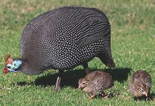
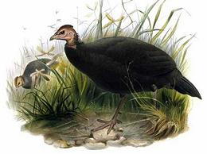

SAFARI
Users
Domestic Helmeted Guineafowl

[Pintade, Pearl Hen, Gleany ; Numida meleagris]
The Helmeted Guineafowl is native to most of Sub Saharan Africa, but prefers open savanna, so avoids the Congo region and some costal regions. When the domesticated variety was developed is unknown, but there is evidence they were being kept in Greece by 500 BCE. They have since been introduced to regions of Africa they did not naturally inhabit, and have been introduced within Europe, India, North Americas, Australia, and the West Indies. As with Chickens, hobby breeders have developed varieties of various colorations and patterns, including pearl gray and lavender. Photo by Derek Keats distributed under license Creative Commons Attribution-ShareAlike v2.0 Generic.
Buying:
These birds are locally and sporadically available in North America, and available from on-line specialists like D'Artagnan, if you can afford their prices and the cost of express shipping. Weight of dressed whole birds is about 2-3/4 pounds (1-1/4 kg). Subst: Free Range Chicken. If not Free Range, then definitely, just thigh and leg meat.Cooking:
These are cooked the same as Free Range Chicken, but they will be a bit tougher, so somewhat longer cooking time.Black Guineafowl
 [Agelastes niger]
The Black Guineafowl is not a domesticated species, but it is actively hunted for food in it's range, especially in West Central Africa. It has the second widest distribution, after the Helmeted Guineafowl, and occupies regions that bird avoids. It is found in humid forests from Nigeria and Cameroon down through West Central Africa through the Congo region and into Angola. Their numbers are declining due to over hunting and habitat degradation, but are still common and IUCN rated LC (Least Concern). Watercolor by Daniel Giraud Elliot copyright expired.